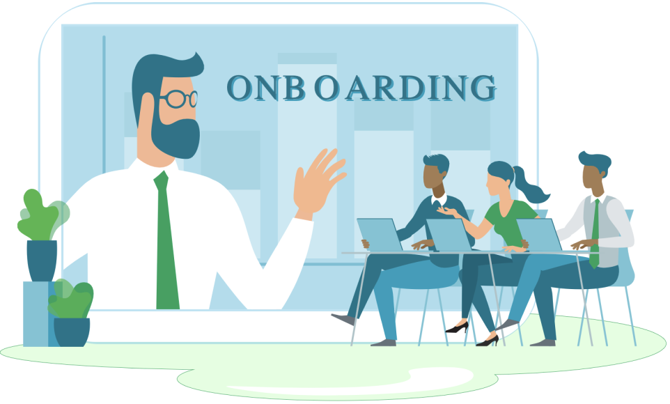

Working title
It is essential to remain up-to-date on user feedback and a user’s experience. By collaborating with a team and working with Warp, we were able to take their previously received client feedback to design and improve the onboarding experience of their modernized terminal.
Role:
Team:
Timeline:
WARP'S REIMAGINED TERMINAL
Warp’s mission is to re-create the terminal and command line experience in a modern, efficient, and more usable app. They have incorporated features such as the Warp drive for collaboration, Warp AI, and AI auto correction to reimagine a user’s terminal.
OUR TASK
Our team of four was tasked specifically with altering the onboarding experience. The current onboarding process starts with a marketing survey prior to the download of the product and is followed by a brief tutorial on some features in their organizational structure of “blocklists.” We focused on improving and expanding the sequence to keep users engaged and well-informed on all of the unique features. Through our work, Warp was looking to streamline user setup and minimize the time needed to figure out if the product is right for them.
ONBOARDING RESEARCH
To begin our remodeling of the onboarding experience, we read through Warp’s product brief and feature list to further understand what features they wanted us to handle as well as the users they were looking to target. I went through the downloading and onboarding process for personal research and took notes about what features made sense and what I found particularly confusing. We reached out to the design team and asked for clarifications on company jargon and the motivation of the product. We broadened our research to consider how other companies handled their onboarding experience and what enjoyable and reliable experiences we could implement in our revised onboarding prototype.

BEGINNING OF DESIGN
Our team set out to create eight independent sketches, two per person. We each thought of a rather straightforward solution as well as a more far fetched and elaborate design. From here, we moved to create one low-fi wireframe as a group. We spent a lot of time analyzing and determining what features made the most sense from each of our sketches to include in the final development. We compared and shared feedback on what we thought would create the best and more efficient design. Specifically from my research and sketching, we decided to incorporate hidden, but distinctive, features that were missing in the onboarding experience, such as the Warp drive and the AI features.